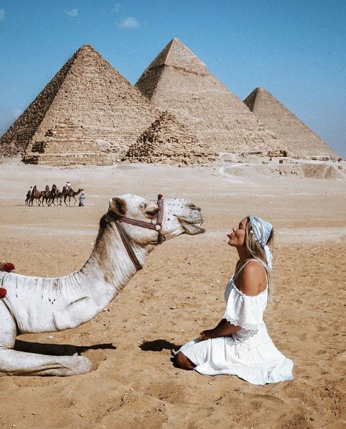
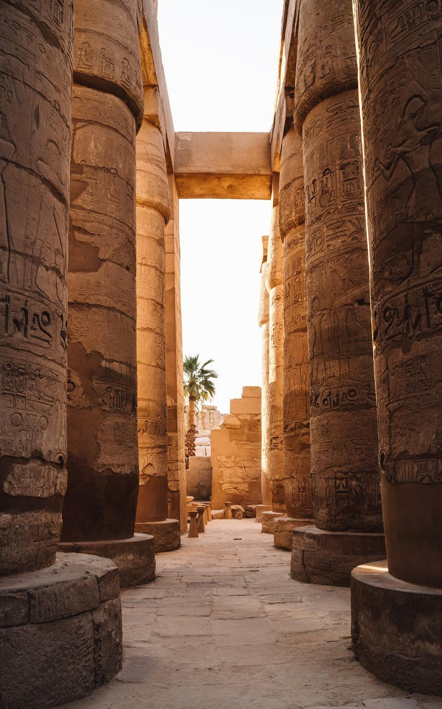
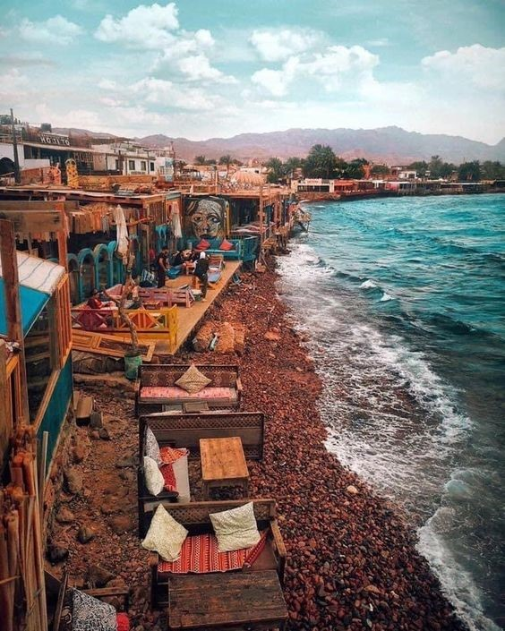
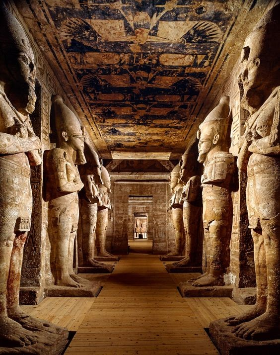
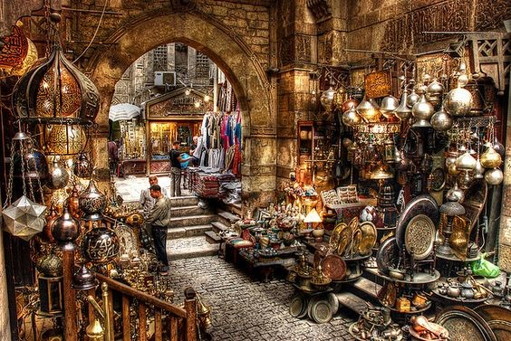
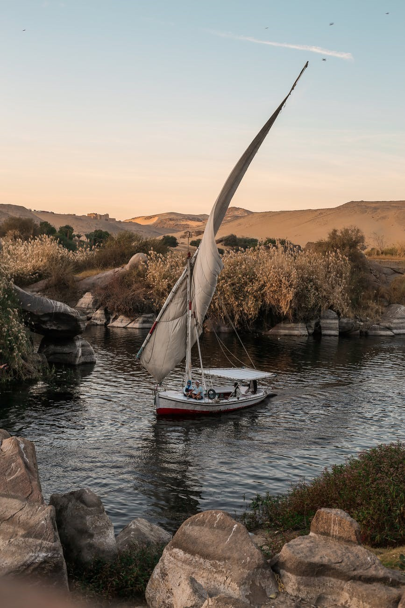
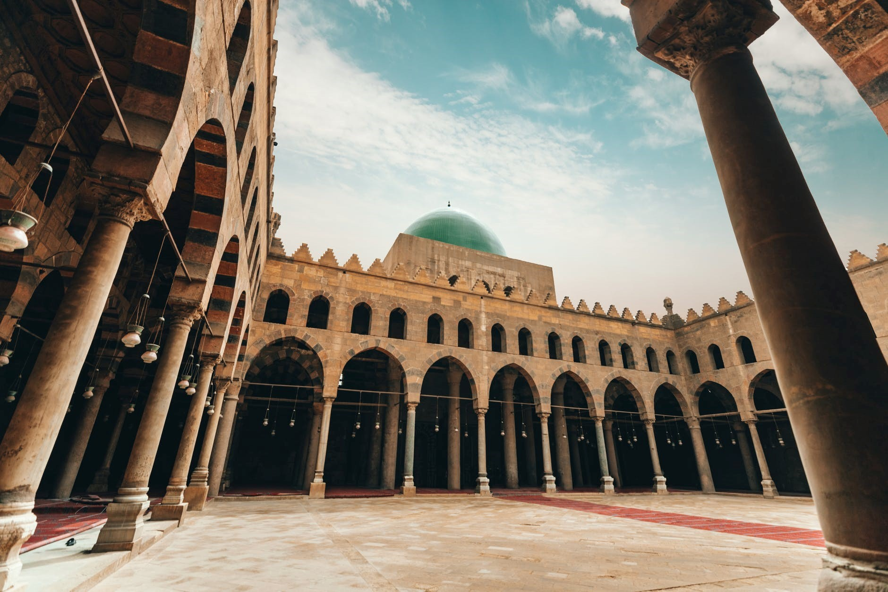
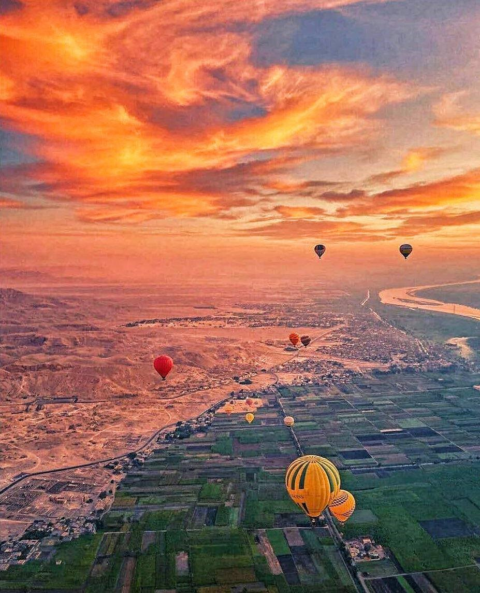
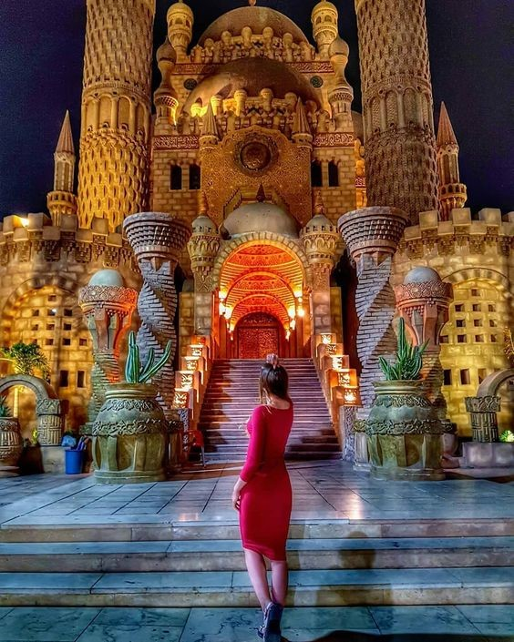

Best Places in Egypt

The Pyramids
The last surviving of the Seven Wonders of the Ancient World, the Pyramids of Giza are one of the world's most recognizable landmarks. Built as tombs for the mighty Pharaohs and guarded by the enigmatic Sphinx, Giza's pyramid complex has awed travelers down through the ages and had archaeologists (and a fair few conspiracy theorists) scratching their heads over how they were built for centuries.
Today, these megalithic memorials to dead kings are still as wondrous a sight as they ever were. An undeniable highlight of any Egypt trip, Giza's pyramids should not be missed.
Location: Giza
Timings: 8 AM – 5 PM

Valley of the Kings
Located on the East bank of river Nile, Luxor was the site of the ancient city of Thebes and is one of the most popular Egypt tourist spots. Hailed as the world’s largest open-air museum, Luxor is best known for the Valley of Kings that houses rock-cut tombs of ancient pharaohs. Famous ancient kings such as Tutankhamun and Amenhotep were buried here. Although there are about 63 tombs that have been excavated, only a small number is open to tourists. Tutankhamun’s tomb, called the KV62, has a separate entry charge. One of the most haunting places to see in Egypt for sure!
Location: Luxor
Timings in Summers: 6 AM – 5 PM (till 4 PM in winters)

Dahab
Dahab is a charming and relaxed beach town known for SCUBA diving, free diving, snorkeling, windsurfing, kayaking, and other water sports. Plus, you can find yoga classes, rock climbing excursions, and sandboarding. Once a small Bedouin village, Dahab has become popular with hippies and adrenaline seekers alike.
In any case, the beautiful beaches here are equally good for relaxing and napping as they are for partaking in more exhilarating pursuits like free diving. While in the area, you might also want to book a tour into the desert or a trip to Mount Sinai and St. Catherine’s Monastery.
location: on the Gulf of Aqaba, about 50 miles north of Sharm

Abu Simbel
Even in a country festooned with temples, Abu Simbel is something special. This is Ramses II's great temple, adorned with colossal statuary standing guard outside, and with an interior sumptuously decorated with wall paintings. Justly famous for its megalithic proportions, Abu Simbel is also known for the incredible feat, which saw the entire temple moved from its original setting — set to disappear under the water because of the Aswan dam — during the 1960s in a massive UNESCO operation that took four years.
Location: Abu Simbel, Nubia
Timings: 5 AM – 6 PM

Khan-elKhalili
No visit to Cairo is Complete without a stop at the Khan El-Khalili bazaar, where you will be transported back in time to an old Arab souk. Shop owners calling you to their stalls, the scent of spices, the hustle and bustle of trade, and the many beautiful objects that can purchased will have you lost among alleys for hours. Put your haggling skills to the test when buying statuettes, spices, souvenirs, silver jewellery, t-shirts, galabiyyas, belly dancing costumes, or anything for that matter. When your shopping's done, dont miss out on a traditional cup of tea at the famous Fishawi's cafe.

Nile Cruising
Egypt is defined by the Nile. For many visitors a multi-day cruise upon this famed waterway that saw the rise of the Pharaonic era is a highlight of their Egypt trip. Cruising the Nile is also the most relaxing way to see the temples that stud the banks of the river on the route between Luxor and Aswan, plus sunrise and sunset over the date-palm-studded river banks, backed by sand dunes, is one of Egypt's most tranquil vistas.

Citadel Of Saladin
One of the many places in ancient Egypt to be declared UNESCO World Heritage Sites, the citadel was built by the famous Ayyubid ruler Saladin to protect the Cairo and Fustat (the first Egyptian capital under the Caliphate) against Crusaders. The huge fortification is lined by several watchtowers and houses several stunning mosques and the Well of Joseph inside. The Al-Naseer, Sulayman Pasha and the Al Gawhara Palace museum are three places that are a must for Egypt sightseeing tours in Cairo.
Location: Central Cairo
Timings: 9 AM – 4 PM

Luxor
Most of the Luxor attractions are located either on the East Bank or the West Bank of the Nile. Famous highlights on the East Bank include Karnak Temple – also known as Ipet-isu (‘Most Select of Places’) – an extraordinary temple city that took over 2,000 years to build. Although the entire Karnak complex consists of four main parts, the main structure known as the Temple of Amun is the only one that is open to the general public. The largest religious building ever built, the temple’s pillared hall is a breathtaking stone forest of 134 columns that stand as high as 21 meters (69 feet). Stroll.
The beautifully illuminated Luxor Temple is a particularly stunning temple to explore at night. On the other side of the Nile, the West Bank boasts the white-washed scenery of the Valley of the Kings, home to many elaborate and colorfully-muraled tombs, pits, and burial chambers. Some of the tombs are included in your ticket entrance, but prepare to pay more to visit King Tut’s tomb – the highlight – the final resting place of King Tutankhamun’s mummy.

Sharm-elSheikh
Sharm el Sheikh is one of the most popular resort towns in Egypt, located at the tip of the Sinai Peninsula. With its warm, deep blue water and great golden beaches, Sharm (as it’s affectionately called) is a popular package holiday destination with its own airport
Despite being the perfect spot for a fly and flop holiday, those looking for adventure will find it here too. Sharm el Sheikh’s at the southern tip of the peninsula gives easy access into the desert, where you can visit Bedouin camps and climb Mount Sinai, an ancient biblical spot known for its spectacular view of the sunrise.